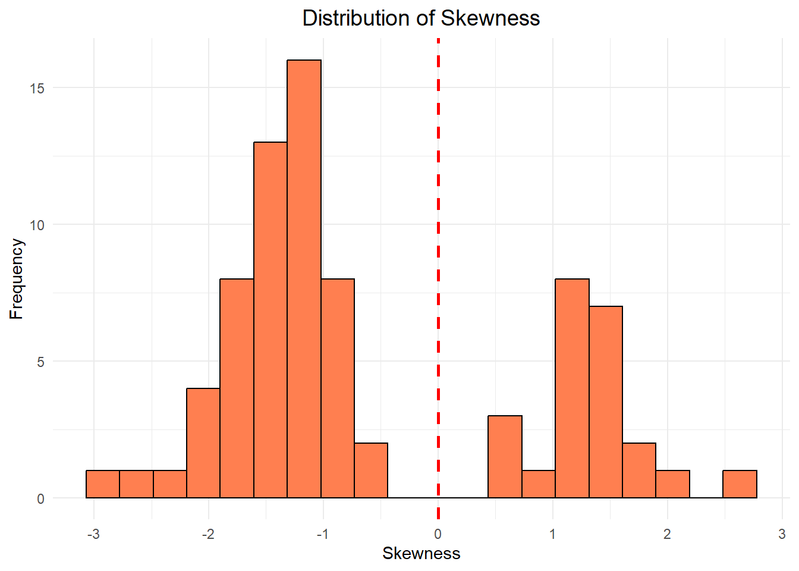
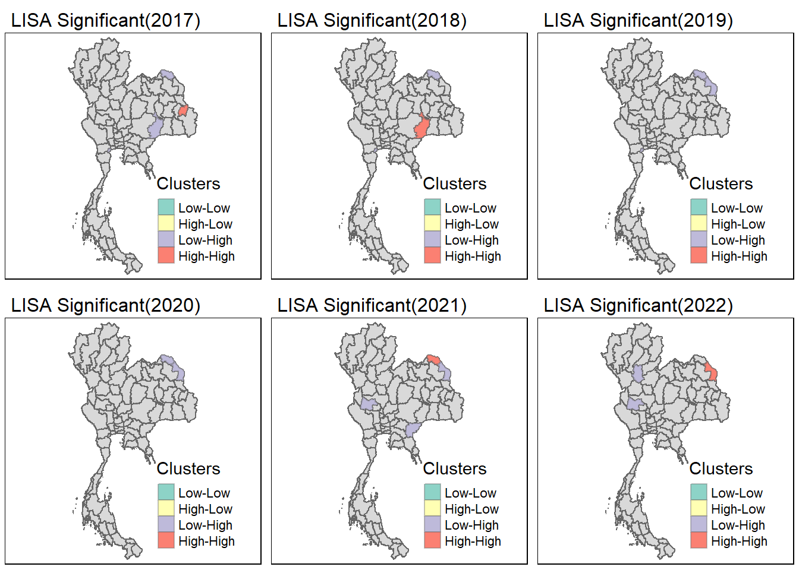

pacman::p_load(sf, sfdep, tmap, tidyverse, ggplot2)Take-home Exercise 02: Application of Geospatial Analysis Methods to Discover Thailand Drug Abuse at the Province Level
Background
Drug abuse is associated with significant negative health, financial and social consequences. Yet, illicit drug consumption remains highly prevalent and continues to be a growing problem worldwide. In 2021, 1 in 17 people aged 15–64 in the world had used a drug in the past 12 months. Notwithstanding population growth, the estimated number of drug users grew from 240 million in 2011 to 296 million in 2021.
The geopolitics of Thailand which is near the Golden Triangle of Indochina, the largest drug production site in Asia, and the constant transportation infrastructure development made Thailand became market and transit routes for drug trafficking to the third countries.
In Thailand, drug abuse is one of the major social issue. There are about 2.7 million youths using drugs in Thailand. Among youths aged between 15 and 19 years, there are about 300,000 who have needs for drug treatment. Most of Thai youths involved with drugs are vocational-school students, which nearly doubles in number compared to secondary-school students.
Objectives
As a curious geospatial analytics green horn, you are interested to discover:
if the key indicators of drug abuse of Thailand are independent from space.
If the indicators of drug abuse is indeed spatial dependent, then, to detect where are the clusters and outliers, and the hotspots.
Last but not least, to investigate how the observation above evolve over time.
The Task
The specific tasks of this take-home exercise are as follows:
Using appropriate function of sf and tidyverse, preparing the following geospatial data layer:
a study area layer in sf polygon features. It must be at province level (including Bangkok) of Thailand.
a drug abuse indicators layer within the study area in sf polygon features.
Using the extracted data, perform global spatial autocorrelation analysis by using sfdep methods.
Using the extracted data, perform local spatial autocorrelation analysis by using sfdep methods.
Describe the spatial patterns revealed by the analysis above.
The Data
For the purpose of this take-home exercise, two data sets shall be used, they are:
Thailand Drug Offenses [2017-2022] at Kaggle.
Thailand - Subnational Administrative Boundaries at HDX. You are required to use the province boundary data set.
Importing Package
Dependencies
Loading the required packages
sf : Needed to handle spatial data through the new simple features standard
tmap : Create thematic maps, particularly chloropleth maps in our case
tidyverse : For easy data manipulation and some visualisation
sfdep : Spatial dependence with spatial features, the highlight of this take home exercise. The spacetime object is particularly useful
ggplot2 : For creating advanced visualisations, graphics and maps using the Grammar of Graphics.
Geospatial data
st_read() of sf package will be used to import Thailand shapefile into R environment in order to get the polygons representing the borders of the provinces in Thailand.
thai <- st_read(dsn = "data/raw/Thailand_shp",
layer = "tha_admbnda_adm1_rtsd_20220121")Reading layer `tha_admbnda_adm1_rtsd_20220121' from data source
`C:\ryanpxp\IS415-GAA\Take-home_Ex\Take-home_Ex02\data\raw\Thailand_shp'
using driver `ESRI Shapefile'
Simple feature collection with 77 features and 16 fields
Geometry type: MULTIPOLYGON
Dimension: XY
Bounding box: xmin: 97.34336 ymin: 5.613038 xmax: 105.637 ymax: 20.46507
Geodetic CRS: WGS 84Next, we will generate a plot of the thai object to visualise its structure.
tm_shape(thai) +
tm_fill("ADM1_EN",
title = "Study Area: Thailand Provinces",
palette = "inferno") +
tm_borders() +
tm_layout(legend.show = FALSE)
Aspatial data
read_csv() of sf package will be used to import the drug offences in the from of csv file into R environment. The output is R dataframe class.
drugs <- read_csv("data/raw/thai_drug_offenses_2017_2022.csv")Rows: 7392 Columns: 5
── Column specification ────────────────────────────────────────────────────────
Delimiter: ","
chr (3): types_of_drug_offenses, province_th, province_en
dbl (2): fiscal_year, no_cases
ℹ Use `spec()` to retrieve the full column specification for this data.
ℹ Specify the column types or set `show_col_types = FALSE` to quiet this message.Wrangling
Mismatched Province
By checking on the naming of the province from both the geospatial and aspatial data, we can see that some of the namings are mismatched. This would cause problems when handling the data.
comparison_df <- data.frame(
Geospatial = sort(unique(thai$ADM1_EN)),
Aspatial = sort(unique(drugs$province_en))
)
print(comparison_df) Geospatial Aspatial
1 Amnat Charoen Amnat Charoen
2 Ang Thong Ang Thong
3 Bangkok Bangkok
4 Bueng Kan buogkan
5 Buri Ram Buri Ram
6 Chachoengsao Chachoengsao
7 Chai Nat Chai Nat
8 Chaiyaphum Chaiyaphum
9 Chanthaburi Chanthaburi
10 Chiang Mai Chiang Mai
11 Chiang Rai Chiang Rai
12 Chon Buri Chon Buri
13 Chumphon Chumphon
14 Kalasin Kalasin
15 Kamphaeng Phet Kamphaeng Phet
16 Kanchanaburi Kanchanaburi
17 Khon Kaen Khon Kaen
18 Krabi Krabi
19 Lampang Lampang
20 Lamphun Lamphun
21 Loei Loburi
22 Lop Buri Loei
23 Mae Hong Son Mae Hong Son
24 Maha Sarakham Maha Sarakham
25 Mukdahan Mukdahan
26 Nakhon Nayok Nakhon Nayok
27 Nakhon Pathom Nakhon Pathom
28 Nakhon Phanom Nakhon Phanom
29 Nakhon Ratchasima Nakhon Ratchasima
30 Nakhon Sawan Nakhon Sawan
31 Nakhon Si Thammarat Nakhon Si Thammarat
32 Nan Nan
33 Narathiwat Narathiwat
34 Nong Bua Lam Phu Nong Bua Lam Phu
35 Nong Khai Nong Khai
36 Nonthaburi Nonthaburi
37 Pathum Thani Pathum Thani
38 Pattani Pattani
39 Phangnga Phangnga
40 Phatthalung Phatthalung
41 Phayao Phayao
42 Phetchabun Phetchabun
43 Phetchaburi Phetchaburi
44 Phichit Phichit
45 Phitsanulok Phitsanulok
46 Phra Nakhon Si Ayutthaya Phra Nakhon Si Ayutthaya
47 Phrae Phrae
48 Phuket Phuket
49 Prachin Buri Prachin Buri
50 Prachuap Khiri Khan Prachuap Khiri Khan
51 Ranong Ranong
52 Ratchaburi Ratchaburi
53 Rayong Rayong
54 Roi Et Roi Et
55 Sa Kaeo Sa Kaeo
56 Sakon Nakhon Sakon Nakhon
57 Samut Prakan Samut Prakan
58 Samut Sakhon Samut Sakhon
59 Samut Songkhram Samut Songkhram
60 Saraburi Saraburi
61 Satun Satun
62 Si Sa Ket Si Sa Ket
63 Sing Buri Sing Buri
64 Songkhla Songkhla
65 Sukhothai Sukhothai
66 Suphan Buri Suphan Buri
67 Surat Thani Surat Thani
68 Surin Surin
69 Tak Tak
70 Trang Trang
71 Trat Trat
72 Ubon Ratchathani Ubon Ratchathani
73 Udon Thani Udon Thani
74 Uthai Thani Uthai Thani
75 Uttaradit Uttaradit
76 Yala Yala
77 Yasothon YasothonThe identified mismatches are:
| Geospatial | Aspatial |
|---|---|
| Bueng Kan (Line 4) | buogkan (Line 4) |
| Lop Buri (Line 22) | Loburi (Line 21) |
We will have to change these province names in the aspatial data to match those in the geospatial daata.
drugs <- drugs %>%
mutate(province_en = recode(province_en,
"buogkan" = "Bueng Kan",
"Loburi" = "Lop Buri"))We can see that both buogkan and Loburi is now changed into Bueng Kan and Lop Buri
print(sort(unique(drugs$province_en))) [1] "Amnat Charoen" "Ang Thong"
[3] "Bangkok" "Bueng Kan"
[5] "Buri Ram" "Chachoengsao"
[7] "Chai Nat" "Chaiyaphum"
[9] "Chanthaburi" "Chiang Mai"
[11] "Chiang Rai" "Chon Buri"
[13] "Chumphon" "Kalasin"
[15] "Kamphaeng Phet" "Kanchanaburi"
[17] "Khon Kaen" "Krabi"
[19] "Lampang" "Lamphun"
[21] "Loei" "Lop Buri"
[23] "Mae Hong Son" "Maha Sarakham"
[25] "Mukdahan" "Nakhon Nayok"
[27] "Nakhon Pathom" "Nakhon Phanom"
[29] "Nakhon Ratchasima" "Nakhon Sawan"
[31] "Nakhon Si Thammarat" "Nan"
[33] "Narathiwat" "Nong Bua Lam Phu"
[35] "Nong Khai" "Nonthaburi"
[37] "Pathum Thani" "Pattani"
[39] "Phangnga" "Phatthalung"
[41] "Phayao" "Phetchabun"
[43] "Phetchaburi" "Phichit"
[45] "Phitsanulok" "Phra Nakhon Si Ayutthaya"
[47] "Phrae" "Phuket"
[49] "Prachin Buri" "Prachuap Khiri Khan"
[51] "Ranong" "Ratchaburi"
[53] "Rayong" "Roi Et"
[55] "Sa Kaeo" "Sakon Nakhon"
[57] "Samut Prakan" "Samut Sakhon"
[59] "Samut Songkhram" "Saraburi"
[61] "Satun" "Si Sa Ket"
[63] "Sing Buri" "Songkhla"
[65] "Sukhothai" "Suphan Buri"
[67] "Surat Thani" "Surin"
[69] "Tak" "Trang"
[71] "Trat" "Ubon Ratchathani"
[73] "Udon Thani" "Uthai Thani"
[75] "Uttaradit" "Yala"
[77] "Yasothon" Exclusion of suspected drug offences
Taking a peek at the type of drug offenses:
unique(drugs$types_of_drug_offenses) [1] "drug_use_cases"
[2] "suspects_in_drug_use_cases"
[3] "possession_cases"
[4] "suspects_in_possession_cases"
[5] "possession_with_intent_to_distribute_cases"
[6] "suspects_in_possession_with_intent_to_distribute_cases"
[7] "trafficking_cases"
[8] "suspects_in_trafficking_cases"
[9] "production_cases"
[10] "suspects_in_production_cases"
[11] "import_cases"
[12] "suspects_in_import_cases"
[13] "export_cases"
[14] "suspects_in_export_cases"
[15] "conspiracy_cases"
[16] "suspects_in_conspiracy_cases" From the above output, the types of offences in the aspatial data includes suspected crimes.
Although, including suspected crimes have its advantages such as insights to emerging crime hotspots, the following are the reasons I have decided to exclude suspected cases:
Accuracy and Precision: Suspected cases may not be confirmed as actual crimes, so including them could overestimate crime rates and lead to misleading conclusions. This can distort the spatial patterns and cause unnecessary alarm in areas where crimes were not ultimately verified.
Data Quality and Reliability: Suspected cases might introduce bias due to inconsistencies in how they are reported or defined across regions. For robust analysis, it’s often better to focus on confirmed cases to ensure the data’s reliability and comparability.
Therefore, we will be extracting only the confirmed cases from the types of drug offenses in the aspatial data for analysis.
confirmed_drug_offenses <- c(
"drug_use_cases", "possession_cases", "possession_with_intent_to_distribute_cases", "trafficking_cases", "production_cases", "import_cases", "export_cases", "conspiracy_cases"
)We will also break up the data into years to look out for trends.
drugs_by_year <- list()
for (year in 2017:2022) {
drugs_by_year[[as.character(year)]] <- left_join(thai, drugs, by = c("ADM1_EN" = "province_en")) %>%
dplyr::select(1:3, 17:19,21) %>%
filter(fiscal_year == year, types_of_drug_offenses %in% confirmed_drug_offenses)
}To speed up the process of loading the dataset in the future, we save the processed data.
write_rds(drugs_by_year, "data/rds/drugs_by_year.rds")drugs_by_year <- read_rds("data/rds/drugs_by_year.rds")Checking the types of drug offences:
unique(drugs_by_year[["2018"]]$types_of_drug_offenses)[1] "drug_use_cases"
[2] "possession_cases"
[3] "possession_with_intent_to_distribute_cases"
[4] "trafficking_cases"
[5] "production_cases"
[6] "import_cases"
[7] "export_cases"
[8] "conspiracy_cases" We can see that the suspected cases are now removed from the aspatial data.
Neighbour data
Study area
This is a geographical map of Thailand’s Provinces retrieved from Wikipedia.

Looking at the above geographical map, we can see that vertical, horizontal and diagonal neighbours of the province are close enough to travel to and influence each other. Hence, we would be using Queen’s contiguity neighbour criteria.
Disconnection of neighbours
To get a quick view on the neighbours of the provinces, we can plot out the neighbours.
# Calculate contiguity neighbors
nb <- st_contiguity(thai$geometry)Warning in spdep::poly2nb(geometry, queen = queen, ...): some observations have no neighbours;
if this seems unexpected, try increasing the snap argument.Warning in spdep::poly2nb(geometry, queen = queen, ...): neighbour object has 2 sub-graphs;
if this sub-graph count seems unexpected, try increasing the snap argument.Running the code produces warnings on some observations having no neighbours. It also indicated that the graph has split into 2 sub-graphs.
To do further investigations, plotting the neighbours would provide a quick overview of what is happening.
plot(st_geometry(thai), border = 'gray')
plot(nb, st_geometry(thai), col = 'red', add = TRUE)
On closer inspecting, one of the province in the bottom left is disconnected from the rest. By referencing the geographical map of Thailand, it appears to be Phuket that is disconnected from the rest.
 To verify that Phuket is indeed the disconnected region, we can check the summary.
To verify that Phuket is indeed the disconnected region, we can check the summary.
summary(nb)Neighbour list object:
Number of regions: 77
Number of nonzero links: 352
Percentage nonzero weights: 5.93692
Average number of links: 4.571429
1 region with no links:
67
2 disjoint connected subgraphs
Link number distribution:
0 1 2 3 4 5 6 7 8 9
1 1 5 17 15 17 10 5 4 2
1 least connected region:
14 with 1 link
2 most connected regions:
29 51 with 9 linksFrom the above we can see that region number 67 is without any neighbours. To retrieve the name of region 67 (index 67 in nb):
thai$ADM1_EN[67][1] "Phuket"It is confirmed that Phuket is disconnected from the rest.
 Looking at the map, we can see that while Phuket is disconnected by water body, we can considered it to be the neighbour of Phangnga.
Looking at the map, we can see that while Phuket is disconnected by water body, we can considered it to be the neighbour of Phangnga.
which(unique(thai$ADM1_EN) == "Phangnga")[1] 66From the code above, we now know the number for the Phangnga region (number 67) and we will manually add Phuket to Phangnga and Phangnga to Phuket.
Adding Phuket to Phangnga
This code is not idempotent!
nb[[66]] <- c(nb[[66]], as.integer(67))Adding Phangnga to Phuket
nb[[67]] <- as.integer(c(66))Ensure that all regions are connected:
summary(nb)Neighbour list object:
Number of regions: 77
Number of nonzero links: 354
Percentage nonzero weights: 5.970653
Average number of links: 4.597403
2 disjoint connected subgraphs
Link number distribution:
1 2 3 4 5 6 7 8 9
2 5 16 16 17 10 5 4 2
2 least connected regions:
14 67 with 1 link
2 most connected regions:
29 51 with 9 linksPhuket and Phangnga should now be connected when plotting the neighbour
plot(st_geometry(thai), border = 'gray')
plot(nb, st_geometry(thai), col = 'red', add = TRUE)Setting of seed
Lastly, in order to make the data reproducible we would set the seed to a specify value.
set.seed(12345)Global Moran’s I Test
In order to evaluate spatial autocorrelation in our dataset, or to determine whether drug cases tend to cluster within specific provinces, we run Global Moran’s Test.
We have to first add the neighbours and the weights of the neighbours as columns to the dataset.
wm_q2017 <- drugs_by_year[["2017"]] %>%
group_by(ADM1_EN) %>%
summarise(no_cases = sum(no_cases, na.rm = TRUE)) %>%
ungroup() %>%
mutate(nb = nb,
wt = st_weights(nb, style = "W"),
.before = 1)wm_q2018 <- drugs_by_year[["2018"]] %>%
group_by(ADM1_EN) %>%
summarise(no_cases = sum(no_cases, na.rm = TRUE)) %>%
ungroup() %>%
mutate(nb = nb,
wt = st_weights(nb, style = "W"),
.before = 1)
glimpse(wm_q2018)wm_q2019 <- drugs_by_year[["2019"]] %>%
group_by(ADM1_EN) %>%
summarise(no_cases = sum(no_cases, na.rm = TRUE)) %>%
ungroup() %>%
mutate(nb = nb,
wt = st_weights(nb, style = "W"),
.before = 1)
glimpse(wm_q2019)wm_q2020 <- drugs_by_year[["2020"]] %>%
group_by(ADM1_EN) %>%
summarise(no_cases = sum(no_cases, na.rm = TRUE)) %>% # Summarize cases per province
ungroup() %>%
mutate(nb = nb,
wt = st_weights(nb, style = "W"),
.before = 1)
glimpse(wm_q2020)wm_q2021 <- drugs_by_year[["2021"]] %>%
group_by(ADM1_EN) %>%
summarise(no_cases = sum(no_cases, na.rm = TRUE)) %>% # Summarize cases per province
ungroup() %>%
mutate(nb = nb,
wt = st_weights(nb, style = "W"),
.before = 1)
glimpse(wm_q2021)wm_q2022 <- drugs_by_year[["2022"]] %>%
group_by(ADM1_EN) %>%
summarise(no_cases = sum(no_cases, na.rm = TRUE)) %>% # Summarize cases per province
ungroup() %>%
mutate(nb = nb,
wt = st_weights(nb, style = "W"),
.before = 1)
glimpse(wm_q2022)Quick glance at global Moran’s I test
The assumptions of the test are sensitive to the structure of the neighbor relationship graph and other factors. To validate the results, we will run Global Moran’s I tests.
To get a sensing of possible spatial correlation between provinces, we can run the code chunks below first.
moranI2017 <- global_moran(wm_q2017$no_cases,
wm_q2017$nb,
wm_q2017$wt)
glimpse(moranI2017)List of 2
$ I: num -0.0697
$ K: num 31.8moranI2018 <- global_moran(wm_q2018$no_cases,
wm_q2018$nb,
wm_q2018$wt)
glimpse(moranI2018)List of 2
$ I: num -0.0844
$ K: num 30.2moranI2019 <- global_moran(wm_q2019$no_cases,
wm_q2019$nb,
wm_q2019$wt)
glimpse(moranI2019)List of 2
$ I: num -0.0905
$ K: num 18.4moranI2020 <- global_moran(wm_q2020$no_cases,
wm_q2020$nb,
wm_q2020$wt)
glimpse(moranI2020)List of 2
$ I: num -0.0473
$ K: num 12.2moranI2021 <- global_moran(wm_q2021$no_cases,
wm_q2021$nb,
wm_q2021$wt)
glimpse(moranI2021)List of 2
$ I: num -0.0199
$ K: num 5.54moranI2022 <- global_moran(wm_q2022$no_cases,
wm_q2022$nb,
wm_q2022$wt)
glimpse(moranI2022)List of 2
$ I: num 0.0408
$ K: num 3.29From the quick glance, the results are leaning towards random patterns. We should run permutations of the Global Moran’s I to investigate further.
Permutations of Global Moran’s I
We will use global_moran_perm() function from sfdep package with nsim = 99.
global_moran_perm(wm_q2017$no_cases,
wm_q2017$nb,
wm_q2017$wt,
nsim = 99)
Monte-Carlo simulation of Moran I
data: x
weights: listw
number of simulations + 1: 100
statistic = -0.069721, observed rank = 13, p-value = 0.26
alternative hypothesis: two.sidedglobal_moran_perm(wm_q2018$no_cases,
wm_q2018$nb,
wm_q2018$wt,
nsim = 99)
Monte-Carlo simulation of Moran I
data: x
weights: listw
number of simulations + 1: 100
statistic = -0.084421, observed rank = 10, p-value = 0.2
alternative hypothesis: two.sidedglobal_moran_perm(wm_q2019$no_cases,
wm_q2019$nb,
wm_q2019$wt,
nsim = 99)
Monte-Carlo simulation of Moran I
data: x
weights: listw
number of simulations + 1: 100
statistic = -0.090517, observed rank = 9, p-value = 0.18
alternative hypothesis: two.sidedglobal_moran_perm(wm_q2020$no_cases,
wm_q2020$nb,
wm_q2020$wt,
nsim = 99)
Monte-Carlo simulation of Moran I
data: x
weights: listw
number of simulations + 1: 100
statistic = -0.047281, observed rank = 31, p-value = 0.62
alternative hypothesis: two.sidedglobal_moran_perm(wm_q2021$no_cases,
wm_q2021$nb,
wm_q2021$wt,
nsim = 99)
Monte-Carlo simulation of Moran I
data: x
weights: listw
number of simulations + 1: 100
statistic = -0.019865, observed rank = 54, p-value = 0.92
alternative hypothesis: two.sidedglobal_moran_perm(wm_q2022$no_cases,
wm_q2022$nb,
wm_q2022$wt,
nsim = 99)
Monte-Carlo simulation of Moran I
data: x
weights: listw
number of simulations + 1: 100
statistic = 0.040794, observed rank = 76, p-value = 0.48
alternative hypothesis: two.sidedInference
From the results of the Monte Carlo simulations of Moran’s I for the years 2017-2022, we can infer that:
Moran’s I statistic values for each year are close to zero (ranging from -0.09 to 0.04), indicating little to no spatial autocorrelation in the distribution of dengue cases. Therefore, the spatial distribution of cases does not show significant clustering or dispersion patterns across the areas analyzed.
P-values for all years are much greater than 0.05, ranging from 0.3 to 0.96, which means that we fail to reject the null hypothesis of no spatial autocorrelation. This suggests that we cannot conclude that there are signs of significant spatial clustering.
Overall, the results suggest that the distribution of dengue cases in these years does not show a significant spatial pattern and can be considered random based on Moran’s I and Monte Carlo simulations.
Local Moran’s I test
Despite the results from the global Moran’s I test not showing significant spatial autocorrelation, it may still be worth performing local Moran’s I/Local Indicators of Spatial Associationc(LISA) for a more detailed, localized analysis.
Even when global Moran’s I suggests no overall spatial autocorrelation, local Moran’s I can reveal clusters or outliers at a finer scale. Some areas might still exhibit significant clustering or spatial dependence, which the global test may not detect. For example, there could be pockets of high or low incidence that are spatially clustered even if the overall pattern is random.
The code chunk below will generate the local Moran’s I for each individual years.
lisa2017 <- wm_q2017 %>%
mutate(local_moran = local_moran(
no_cases, nb, wt, nsim = 99),
.before = 1) %>%
unnest(local_moran)lisa2018 <- wm_q2018 %>%
mutate(local_moran = local_moran(
no_cases, nb, wt, nsim = 99),
.before = 1) %>%
unnest(local_moran)lisa2019 <- wm_q2019 %>%
mutate(local_moran = local_moran(
no_cases, nb, wt, nsim = 99),
.before = 1) %>%
unnest(local_moran)lisa2020 <- wm_q2020 %>%
mutate(local_moran = local_moran(
no_cases, nb, wt, nsim = 99),
.before = 1) %>%
unnest(local_moran)lisa2021 <- wm_q2021 %>%
mutate(local_moran = local_moran(
no_cases, nb, wt, nsim = 99),
.before = 1) %>%
unnest(local_moran)lisa2022 <- wm_q2022 %>%
mutate(local_moran = local_moran(
no_cases, nb, wt, nsim = 99),
.before = 1) %>%
unnest(local_moran)Skewness of the LISA
In order to identify if we should use mean or median values for the visualisation, we need to identify how skewed the data are.
num_greater_than_05 <- sum(abs(lisa2017$skewness) > 0.5)
percentage <- (num_greater_than_05 / nrow(lisa2017)) * 100
print(paste0("Percentage of rows with abs(skewness) > 0.5: ", round(percentage, 2), "%"))[1] "Percentage of rows with abs(skewness) > 0.5: 100%"ggplot(lisa2017, aes(x = skewness)) +
geom_histogram(bins = 20, fill = "coral", color = "black") +
geom_vline(xintercept = 0, color = "red", linetype = "dashed", linewidth = 1) +
labs(title = "Distribution of Skewness",
x = "Skewness",
y = "Frequency") +
theme_minimal() +
theme(plot.title = element_text(hjust = 0.5, size = 14))num_greater_than_05 <- sum(abs(lisa2018$skewness) > 0.5)
percentage <- (num_greater_than_05 / nrow(lisa2018)) * 100
print(paste0("Percentage of rows with abs(skewness) > 0.5: ", round(percentage, 2), "%"))[1] "Percentage of rows with abs(skewness) > 0.5: 98.7%"ggplot(lisa2018, aes(x = skewness)) +
geom_histogram(bins = 20, fill = "coral", color = "black") +
geom_vline(xintercept = 0, color = "red", linetype = "dashed", linewidth = 1) +
labs(title = "Distribution of Skewness",
x = "Skewness",
y = "Frequency") +
theme_minimal() +
theme(plot.title = element_text(hjust = 0.5, size = 14))num_greater_than_05 <- sum(abs(lisa2019$skewness) > 0.5)
percentage <- (num_greater_than_05 / nrow(lisa2019)) * 100
print(paste0("Percentage of rows with abs(skewness) > 0.5: ", round(percentage, 2), "%"))[1] "Percentage of rows with abs(skewness) > 0.5: 100%"ggplot(lisa2019, aes(x = skewness)) +
geom_histogram(bins = 20, fill = "coral", color = "black") +
geom_vline(xintercept = 0, color = "red", linetype = "dashed", linewidth = 1) +
labs(title = "Distribution of Skewness",
x = "Skewness",
y = "Frequency") +
theme_minimal() +
theme(plot.title = element_text(hjust = 0.5, size = 14))
num_greater_than_05 <- sum(abs(lisa2020$skewness) > 0.5)
percentage <- (num_greater_than_05 / nrow(lisa2020)) * 100
print(paste0("Percentage of rows with abs(skewness) > 0.5: ", round(percentage, 2), "%"))[1] "Percentage of rows with abs(skewness) > 0.5: 98.7%"ggplot(lisa2020, aes(x = skewness)) +
geom_histogram(bins = 20, fill = "coral", color = "black") +
geom_vline(xintercept = 0, color = "red", linetype = "dashed", linewidth = 1) +
labs(title = "Distribution of Skewness",
x = "Skewness",
y = "Frequency") +
theme_minimal() +
theme(plot.title = element_text(hjust = 0.5, size = 14)) num_greater_than_05 <- sum(abs(lisa2021$skewness) > 0.5)
percentage <- (num_greater_than_05 / nrow(lisa2021)) * 100
print(paste0("Percentage of rows with abs(skewness) > 0.5: ", round(percentage, 2), "%"))[1] "Percentage of rows with abs(skewness) > 0.5: 76.62%"ggplot(lisa2021, aes(x = skewness)) +
geom_histogram(bins = 20, fill = "coral", color = "black") +
geom_vline(xintercept = 0, color = "red", linetype = "dashed", linewidth = 1) +
labs(title = "Distribution of Skewness",
x = "Skewness",
y = "Frequency") +
theme_minimal() +
theme(plot.title = element_text(hjust = 0.5, size = 14))num_greater_than_05 <- sum(abs(lisa2022$skewness) > 0.5)
percentage <- (num_greater_than_05 / nrow(lisa2022)) * 100
print(paste0("Percentage of rows with abs(skewness) > 0.5: ", round(percentage, 2), "%"))[1] "Percentage of rows with abs(skewness) > 0.5: 42.86%"ggplot(lisa2022, aes(x = skewness)) +
geom_histogram(bins = 20, fill = "coral", color = "black") +
geom_vline(xintercept = 0, color = "red", linetype = "dashed", linewidth = 1) +
labs(title = "Distribution of Skewness",
x = "Skewness",
y = "Frequency") +
theme_minimal() +
theme(plot.title = element_text(hjust = 0.5, size = 14))Since the data is evidently skewed for all the years, we would use the median instead of the mean to visualise the data.
Visualising Local Spatial Autocorrelation Map and Significance Map
We will be using the tmap package to visualize spatial patterns by generating two side-by-side thematic maps for each years’ local Moran’s I.
map1 <- tm_shape(lisa2017) +
tm_fill("ii") +
tm_borders(alpha = 0.5) +
tm_view(set.zoom.limits = c(6,8)) +
tm_layout(main.title = "Local Moran's I of No of cases",
main.title.size = 0.8)
map2 <- tm_shape(lisa2017) +
tm_fill("p_ii",
breaks = c(0, 0.001, 0.01, 0.05, 1),
labels = c("0.001", "0.01", "0.05", "Not sig"),
palette = "-Purples") +
tm_borders(alpha = 0.5) +
tm_layout(main.title = "P-value of Local Moran's I",
main.title.size = 0.8)
tmap_arrange(map1, map2, ncol = 2)Variable(s) "ii" contains positive and negative values, so midpoint is set to 0. Set midpoint = NA to show the full spectrum of the color palette.map1 <- tm_shape(lisa2018) +
tm_fill("ii") +
tm_borders(alpha = 0.5) +
tm_view(set.zoom.limits = c(6, 8)) +
tm_layout(main.title = "Local Moran's I of No of Cases",
main.title.size = 0.8)
map2 <- tm_shape(lisa2018) +
tm_fill("p_ii",
breaks = c(0, 0.001, 0.01, 0.05, 1),
labels = c("0.001", "0.01", "0.05", "Not sig"),
palette = "-Purples") +
tm_borders(alpha = 0.5) +
tm_layout(main.title = "P-value of Local Moran's I",
main.title.size = 0.8)
tmap_arrange(map1, map2, ncol = 2)Variable(s) "ii" contains positive and negative values, so midpoint is set to 0. Set midpoint = NA to show the full spectrum of the color palette.map1 <- tm_shape(lisa2019) +
tm_fill("ii") +
tm_borders(alpha = 0.5) +
tm_view(set.zoom.limits = c(6,8)) +
tm_layout(main.title = "Local Moran's I of No of cases",
main.title.size = 0.8)
map2 <- tm_shape(lisa2019) +
tm_fill("p_ii",
breaks = c(0, 0.001, 0.01, 0.05, 1),
labels = c("0.001", "0.01", "0.05", "Not sig"),
palette = "-Purples") +
tm_borders(alpha = 0.5) +
tm_layout(main.title = "P-value of Local Moran's I",
main.title.size = 0.8)
tmap_arrange(map1, map2, ncol = 2)Variable(s) "ii" contains positive and negative values, so midpoint is set to 0. Set midpoint = NA to show the full spectrum of the color palette.map1 <- tm_shape(lisa2020) +
tm_fill("ii") +
tm_borders(alpha = 0.5) +
tm_view(set.zoom.limits = c(6,8)) +
tm_layout(main.title = "Local Moran's I of No of cases",
main.title.size = 0.8)
map2 <- tm_shape(lisa2020) +
tm_fill("p_ii",
breaks = c(0, 0.001, 0.01, 0.05, 1),
labels = c("0.001", "0.01", "0.05", "Not sig"),
palette = "-Purples") +
tm_borders(alpha = 0.5) +
tm_layout(main.title = "P-value of Local Moran's I",
main.title.size = 0.8)
tmap_arrange(map1, map2, ncol = 2)Variable(s) "ii" contains positive and negative values, so midpoint is set to 0. Set midpoint = NA to show the full spectrum of the color palette.map1 <- tm_shape(lisa2021) +
tm_fill("ii") +
tm_borders(alpha = 0.5) +
tm_view(set.zoom.limits = c(6,8)) +
tm_layout(main.title = "Local Moran's I of No of cases",
main.title.size = 0.8)
map2 <- tm_shape(lisa2021) +
tm_fill("p_ii",
breaks = c(0, 0.001, 0.01, 0.05, 1),
labels = c("0.001", "0.01", "0.05", "Not sig"),
palette = "-Purples") +
tm_borders(alpha = 0.5) +
tm_layout(main.title = "P-value of Local Moran's I",
main.title.size = 0.8)
tmap_arrange(map1, map2, ncol = 2)Variable(s) "ii" contains positive and negative values, so midpoint is set to 0. Set midpoint = NA to show the full spectrum of the color palette.
map1 <- tm_shape(lisa2022) +
tm_fill("ii") +
tm_borders(alpha = 0.5) +
tm_view(set.zoom.limits = c(6,8)) +
tm_layout(main.title = "Local Moran's I of No of cases",
main.title.size = 0.8)
map2 <- tm_shape(lisa2022) +
tm_fill("p_ii",
breaks = c(0, 0.001, 0.01, 0.05, 1),
labels = c("0.001", "0.01", "0.05", "Not sig"),
palette = "-Purples") +
tm_borders(alpha = 0.5) +
tm_layout(main.title = "P-value of Local Moran's I",
main.title.size = 0.8)
tmap_arrange(map1, map2, ncol = 2)Variable(s) "ii" contains positive and negative values, so midpoint is set to 0. Set midpoint = NA to show the full spectrum of the color palette.Visualising Statistically Significant Local Spatial Autocorrelation Map
In order to better provide a comprehensive view of spatial autocorrelation, we will specifically be focusing on statistically significant areas only.
Show the code
lisa2017_sig <- lisa2017 %>% filter(p_ii < 0.05)
lisa2018_sig <- lisa2018 %>% filter(p_ii < 0.05)
lisa2019_sig <- lisa2019 %>% filter(p_ii < 0.05)
lisa2020_sig <- lisa2020 %>% filter(p_ii < 0.05)
lisa2021_sig <- lisa2021 %>% filter(p_ii < 0.05)
lisa2022_sig <- lisa2022 %>% filter(p_ii < 0.05)
# Create individual maps
map_2017 <- tm_shape(lisa2017) +
tm_polygons() +
tm_borders(alpha = 0.5) +
tm_shape(lisa2017_sig) +
tm_fill("median", title = "Clusters") +
tm_borders(alpha = 0.4) +
tm_layout(main.title = "LISA Significant(2017)", main.title.size = 1)
map_2018 <- tm_shape(lisa2018) +
tm_polygons() +
tm_borders(alpha = 0.5) +
tm_shape(lisa2018_sig) +
tm_fill("median", title = "Clusters") +
tm_borders(alpha = 0.4) +
tm_layout(main.title = "LISA Significant(2018)", main.title.size = 1)
map_2019 <- tm_shape(lisa2019) +
tm_polygons() +
tm_borders(alpha = 0.5) +
tm_shape(lisa2019_sig) +
tm_fill("median", title = "Clusters") +
tm_borders(alpha = 0.4) +
tm_layout(main.title = "LISA Significant(2019)", main.title.size = 1)
map_2020 <- tm_shape(lisa2020) +
tm_polygons() +
tm_borders(alpha = 0.5) +
tm_shape(lisa2020_sig) +
tm_fill("median", title = "Clusters") +
tm_borders(alpha = 0.4) +
tm_layout(main.title = "LISA Significant(2020)", main.title.size = 1)
map_2021 <- tm_shape(lisa2021) +
tm_polygons() +
tm_borders(alpha = 0.5) +
tm_shape(lisa2021_sig) +
tm_fill("median", title = "Clusters") +
tm_borders(alpha = 0.4) +
tm_layout(main.title = "LISA Significant(2021)", main.title.size = 1)
map_2022 <- tm_shape(lisa2022) +
tm_polygons() +
tm_borders(alpha = 0.5) +
tm_shape(lisa2022_sig) +
tm_fill("median", title = "Clusters") +
tm_borders(alpha = 0.4) +
tm_layout(main.title = "LISA Significant(2022)", main.title.size = 1)
tmap_mode("plot")
tmap_arrange(map_2017, map_2018, map_2019, map_2020, map_2021, map_2022, ncol = 3)
Inference
Based on the Local Moran’s I maps of Thailand from 2017 to 2022 above, the key conclusions that can be drawn are:
A persistent High-High cluster appears in the northeastern region in most years (2017, 2018, 2021, 2022), suggesting a consistent hotspot.This might suggests an entrenched drug problem in this region. Other areas show more variability, shifting between different cluster types across years.
There’s limited evidence of Low-Low clusters throughout the period which might suggest that low drug related crimes in one province do not influence drug related crimes in its neighbouring province.
Conclusion
The results suggest that while certain areas (like the northeastern region) show persistent outliers of drug abuse, the overall spatial pattern is random and varies over time. Policing effort should be enforced regardless of the province and broader preventive measures may be necessary to address fluctuating crime patterns.